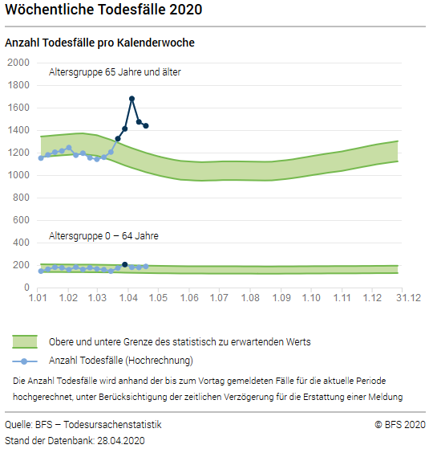
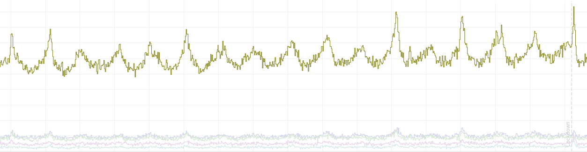
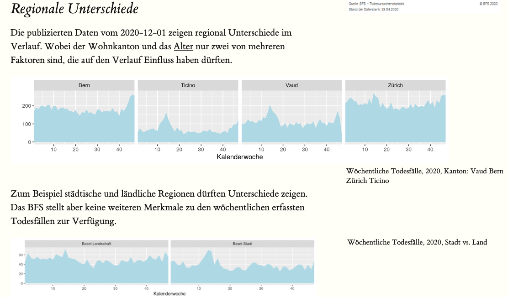

Einleitung
Um eine Datenquelle für ein Projekt verwenden können, ist ein Überblick für die grobe Einordnung zwingend.
Nichts ärgerlicher als mit viel Aufwand erfahren müssen, dass in den Daten die gesuchten Informationen fehlen. Noch ärgerlicher wäre unter Zeitdruck nicht zu realisieren, dass die gesuchten Informationen vorhanden wären.
Ein Microservice hat nur eine Aufgabe — er stellt ein Überblick der Datenquelle zu Verfügung. Das kann eine Tabelle, Metadaten oder eine Beschreibung sein. Einige Anwender bevorzugen Grafiken, Charts oder Dashboards. Zudem ist ein Interface zur Datenquelle zwingend (RESTfull Service).
Halten Sie die Microservice (MS) simpel und RESTfull, dann können Sie für komplexe Projekte viele MS aneinander koppeln. In Ihrem nächsten Projekt verwenden Sie bestehende MS wieder und ergänzen sie mit neuen. Zudem bauen sie damit gleich die Basis für ihre Dokumentation (beispielsweise können sie mit Hilfe von Bookdown ihre Überlegungen zu den Daten beschreiben).
Das Vorgehen mit Microservice ist nachhaltig, weil Sie auch später nachvollziehen können, wie die Daten zustande gekommen sind.
Beispiel: Mortalitätsmonitoring
Das Mortalitätsmonitoring (MOMO) überwacht die wöchentliche Anzahl Todesfälle in der Schweiz.
Die Todesfälle werden täglich den Zivilstandsämtern gemeldet und dem
Bundesamt für Statistik
im Rahmen der Statistik der natürlichen Bevölkerungsbewegung (BEVNAT) mitgeteilt.
Der Melde- und Verarbeitungsprozess dauert in der Regel neun Tage.
Seit zwanzig Jahren werden in der Schweiz wöchentlich die Todesfälle erhoben und die Opendata stehen im Web zur Verfügung. Das Bundesamt stellte Ende April, nach den COVID19 Meldungen aus dem Tessin, folgende Grafik ins Internet.

Die Grafik oben zeigt eine massive Übersterblichkeit im April 2020. Jedoch ist sie weder neutral noch transparent und ist vielleicht für mein Projekt mehr irreleitend als hilfreich.
Micorservice 1
Ein eigener Service, der die aktuellen Daten in Relation zu anderen Jahren und für spezifische Regionen zeigt, könnte für mein Projekt hilfreicher sein.

Das Mortalitäsmonitoring läuft auf
 GitHub
und zeigt grafisch eine Zeitreihe für die ganze Schweiz sowie ausgewählte Kantone. Das interaktive Widget mit dygraphs ermöglicht ein Drill-Down in die Zeitreihe. Mehrere Tabs ermöglichen einige Zusatzinformationen zur Datenquelle anzuzeigen und die
GitHub
und zeigt grafisch eine Zeitreihe für die ganze Schweiz sowie ausgewählte Kantone. Das interaktive Widget mit dygraphs ermöglicht ein Drill-Down in die Zeitreihe. Mehrere Tabs ermöglichen einige Zusatzinformationen zur Datenquelle anzuzeigen und die REST-Schnittstelle wird im json Format angeboten. Weil die Webseite einfach gehalten ist, wird für das Rendern R Markdown mit Pandoc verwendet.
Micorservice 2
Auf diesem Microservice können weitere aufbauen, beispielsweise ein Reporting. Als Beispiel wurde hier, unabhängig und ein ganz eigenes System, das Reporting auf
 aufgebaut.
aufgebaut.

Da das Mortalitätsmonitoring ausschliesslich Opendata benutzt, wurde dafür kostenlose Software eingesetzt. So stehen Ihnen Webserver zur Verfügung, für die ihre IT-Abteilung keinen Unterhalt betreiben muss. Sie können später entscheiden, wie viel Kosten sie für Sicherheit aufwenden wollen.
 ist
ist  und für R-Projekte im Speziellen Rocker.
und für R-Projekte im Speziellen Rocker.